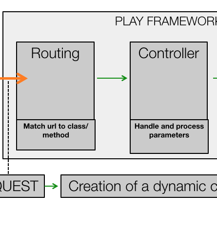
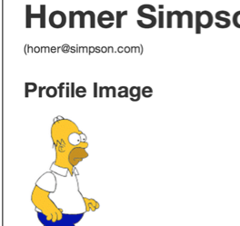
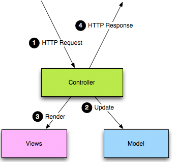
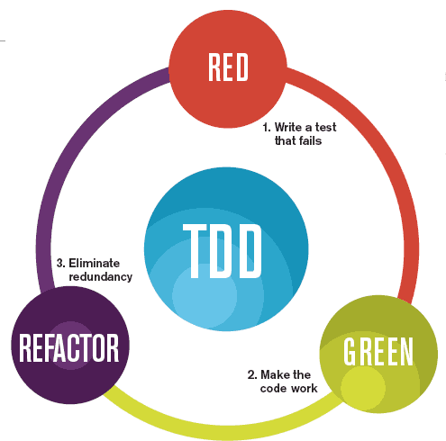
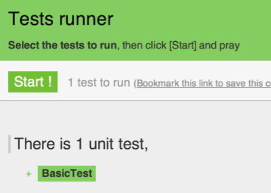
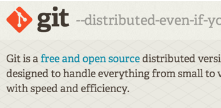
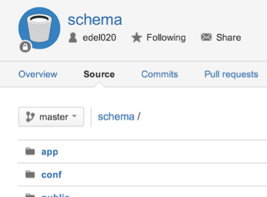
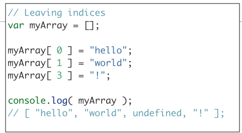

Dynamic Web Applications

The applications to date have been static - essentially a collecting of individual web pages. For more sophisticated web site we need to move to creating web applications. This will require a shift to considering the web site as an aggregating of fragments of web pages, composed and assembled by a program we also write.
Starting to Play

To build a web application we need a web framework. This will define the superstructure of our application and provide essential features to enable us to compose a complicated and efficient web application
Spacebook Skeleton

This is the starter web application you will build in this weeks lab. It will always have a very specific structure coupled with a tightly controller life cycle for handing requests.
Play Project Structure

Play applications follow a specific layout and structure. Understanding this is the key to making sense of play applications, allowing the developer to 'grow' applications in an orderly manner.
Routes, Controllers & Views

Play applications are orchestrated through the routes file. This matches the urls the application can 'serve' to the controllers, which will build the views specific to each request.
Building Web Applications

Web applications can be designed, implemented and tested in an orderly manner - as part of a structured and organised process. Central to such a process is a series of 'user stories', which concisely capture the features the application is to deliver.
Exercises

The exercises in this weeks lab will reinforce your understand of routes/controllers. Here we preview how you might approach these exercises.
Play Review

The framework structure should now be feeling more familiar. Here we review the major features of the framework again, this time focusing on how the framework delivers the major features of a Web Application.
Form Design

A key differentiator between a Static Web Site and a Web Application is forms. This is where the user is invited to entered information - and this data may be retained and stored somewhere.
Models

Retrieving information from the form and storing it is a model is at the heart of Form design. Here we look at the implementation of a simple sign up form.
Review Forms

Another look at the forms concept. Forms are the central mechanism for acquiring information from a user - enabling simple strings and numbers to be entered into a page and 'submitted' to an application.
Models & Databases

A database is where we store information between requests. The model classes we introduce are saved here and we can subsequently query and update any objects we insert.
Sessions

Keeping track of the currently logged in user is a challenge - as HTTP is, by definition 'stateless'. In Play we have a simple and convenient session mechanism, which can conveniently remember information about the currently logged in user.
Status & Members List

The Status Text is a text field the the user can enter on her profile page. The members list will be a list of actual users (not a hard coded list of the simpsons) that will be displayed on the Members page
Following Friends

Implementing a way of following friends requires a new Model class. This will model a "Friendship" relationship, one of which will be created whenever a user 'follows' another user.
Assignment 2

This is the specification for Assignment 2. You can either pursue a project using a (new) CSS framework, or attempt a set of stories in the Spacebook/Play project.
Lab 06 Exercises

These are the worked solutions to the exercises in Lab 06
Status & Members List

The Status Text is a text field the the user can enter on her profile page. The members list will be a list of actual users (not a hard coded list of the simpsons) that will be displayed on the Members page
Following Friends
Implementing a way of following friends requires a new Model class. This will model a "Friendship" relationship, one of which will be created whenever a user 'follows' another user.
Blog

A preview of the Blog Feature - developed as part of Lab 09.
Test Driven Development

TDD is an important programming technique, central to modern development. Here we introduce the main features of the technique.
Play Tests

The Play framework incorporates TDD directly into its features, enabling tests to be executed against the models in an elegant and simple manner. TDD is an important programming technique, central to modern development. Here we introduce the main features of the technique.
Assignment 1 Solution
A review of the completion of the Assignment stories. In addition (in the exercisess) an exploration of a way of making simple 'components' out of the UI such that individuals views can reuse these components in different contexts.
YAML & Preloaded Images
The YAML file can be enriched to load friends/follower information in addition to basic data. However, it cannot load images - but we can do this from the bootstrap file.
UML
Unified Modelling Language is a visual language for representing various aspects of a software solution. A very large and comprehensive language which would take considerable study to master. Here we walk though a general introduction.
Spacebook Model
We can use UML to model out current version of Spacebook. This model will show the classes in the Model package and their relationships. We are building this model after we have already the classes, however we could have composed the model before or concurrent with the implementation of the classes.
Git

An introduction to the role of git in managing the source of a project + the main tools you will use in setting up and managing a git repository
Repository Structure

Creating, committing and pushing/pulling to/from a remote repository is the key skill in working with git. Here we review the major aspects to this workflow, which you will explore in the lab.
Assignment 2
This is the specification for the second assignment. It is defined as a series of stories.
Javascript Introduction

Place javascript in its proper context, and explore its relationship to the browser.
Javascript Basics
How to run a javascript programme in Eclipse and a browser. The basic types and features of the language. How to single step through a javascript programm.
Javascript Arrays & Objects

Arrays and Objects are fundamentally similiar, and understanding this is one of the keys to mastering the language
Selection & Iteration

What true and false mean in Javascript. The primary selection and looping constructs.
Arrays

Arrays are a type of object that are ordered by the index of each item it contains.
Objects
Javascript are effectively unordered key/value pairs. The key is formally known as a property and the value can be any valid JavaScript type, even another object.
Functions
Functions contain blocks of code that need to be executed repeatedly. Functions can take zero or more arguments, and can optionally return a value.